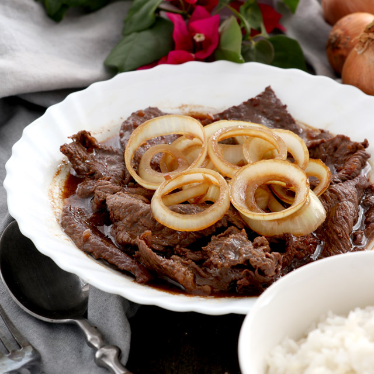

Filipino Beef Steak

- ½ cup soy sauce (such as Kikkoman)
- ¼ cup lime juice
- 3 cloves garlic (smashed)
- 2 teaspoons white sugar
- ground black pepper to taste
- 1 pound beef steak, sliced ¼-inch thick
- 2 tablespoons vegetable oil, divided, or as need
- 4 potatoes, cut into wedges (optional)
- 1 large onion, cut into rings